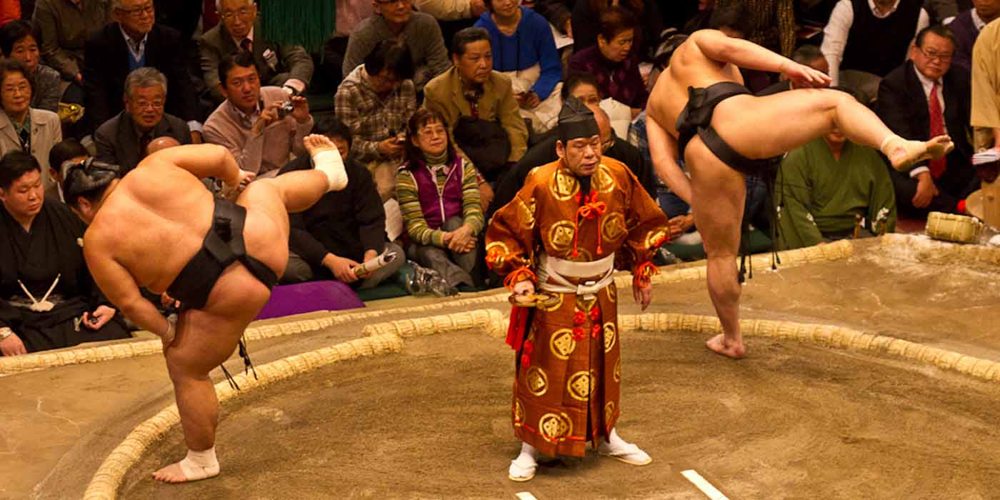
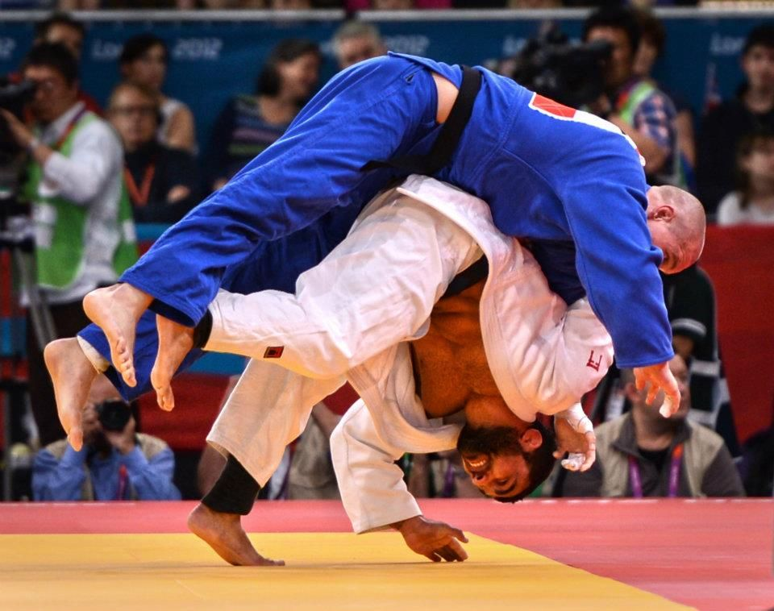

DEPORTES DE JAPON
El deporte juega un papel importante en el tejido de la vida japonesa moderna. Desde una edad temprana, los niños se unen a los equipos de la escuela,
inculcando un sentido de orgullo, trabajo duro y dedicación. Aunque los deportes modernos como el béisbol, el bádminton, el tenis y el fútbol son populares,
Japón es quizás mejor conocido por los deportes con un perfil más antiguo y tradicional.
Deportes Tradicionales de Japon
Sumo
Profundamente arraigado en la cultura de Japón, el sumo tiene una historia de más de 1.500 años. La leyenda dice que la supervivencia del pueblo japonés se equilibró
con el resultado de un combate de sumo entre los dioses, y de hecho el sumo se originó como una forma de ritual sintoísta. Aunque se ha convertido en un deporte profesional,
los elementos de estos rituales siguen siendo evidentes, desde el uso de la sal para purificar el anillo, hasta el techo tipo santuario que cuelga arriba.
Los torneos de sumo, o basho, tienen lugar cada dos meses en Tokio, Osaka, Nagoya y Fukuoka y son una manera realmente fantástica de pasar el día. Aunque las travesuras previas
son estrictas y formalizadas, las peleas son una mancha espectacular de carne, ruido y poder mientras dos hombres gigantes intentan empujarse, jalarse o golpearse mutuamente
fuera del ring, o en cualquier parte de su cuerpo que no sea la planta de sus pies gigantes.

Kendo
El deporte furioso y ruidoso del kendo es quizás el arte marcial más antiguo de Japón y combina poder, habilidad y valentía.
Kendo podría describirse en términos generales como vallas japonesas
, aunque las espadas
son hoy en día elaboradas a partir de cuatro lamas de bambú sustanciales,
generalmente unidas por correas de cuero. Sus orígenes se encuentran en el período de Kamakura (1185-1333) con los samuráis, que necesitaban practicar su esgrima.
Establecieron escuelas «kenjutsu» para este propósito y, con la influencia del budismo Zen, adquirieron una esencia más bien espiritual como física. Con el tiempo,
las espadas fueron reemplazadas por las duelas de bambú, y se introdujo una armadura corporal gruesa y protectora. Hoy el kendo se practica en todo Japón y es un deporte para todas las edades.
Kárate
Aunque podría decirse que es una de las artes marciales más famosas del mundo, los comienzos del karate son un poco brumosos. A menudo considerados como japoneses,
se dice que los primeros antecedentes del Karate se originaron en lugares tan lejanos como el Subcontinente Indio.
El término Karate originalmente significaba mano Tang
o mano china
, pero después de la Segunda Guerra Mundial el nombre (y el personaje) se cambió para significar «mano vacía»,
que también se pronuncia karate
– un esfuerzo para desarrollar el arte en un estilo japonés. En consecuencia, el karate presenta un combate mayormente desarmado con una espectacular
variedad de golpes y bloques entregados por los puños, pies, piernas y brazos.
Aikido
El Aikido a veces se traduce vagamente como camino del espíritu armonioso
. Es un arte marcial menos abiertamente agresivo que se centra en la defensa al redirigir el poder y la
energía del atacante, con el resultado ideal de que ni el atacado ni el atacante se ven perjudicados.
Aikido fue fundado en la década de 1920 por Ueshiba Morihei. Morihei nació en Tanabe, ubicado en el sur de la península de Kii. Esta es una región remota y hermosa al sur de Kyoto y
Osaka y un lugar de gran importancia espiritual. Este sentido de la espiritualidad se infundió en la esencia del aikido, al igual que los aspectos de la danza japonesa, el sintoísmo, el budismo, el karate y el kendo.
Judo
De todas las artes marciales de Japón, el Judo es quizás el que se ha extendido con mayor éxito en todo el mundo. La esencia radica en la velocidad, la sutileza y la habilidad
de usar el tamaño y la fuerza del oponente contra sí mismos.
La inspiración para el judo nació del bullying que presenció Kano Jigoro en el internado de inglés medio al que asistió en Tokio, cuando solo tenía catorce años. Jigoro quería ser entrenado en
el arte del jiu-jitsu, una antigua forma de autodefensa favorecida por los samuráis. Aunque encontrar un maestro resultó difícil, eventualmente estudió con dos maestros antes de fundar su propia
escuela y dojo en el Templo Eisho-ji en Tokio, y desde allí se creó el judo.
